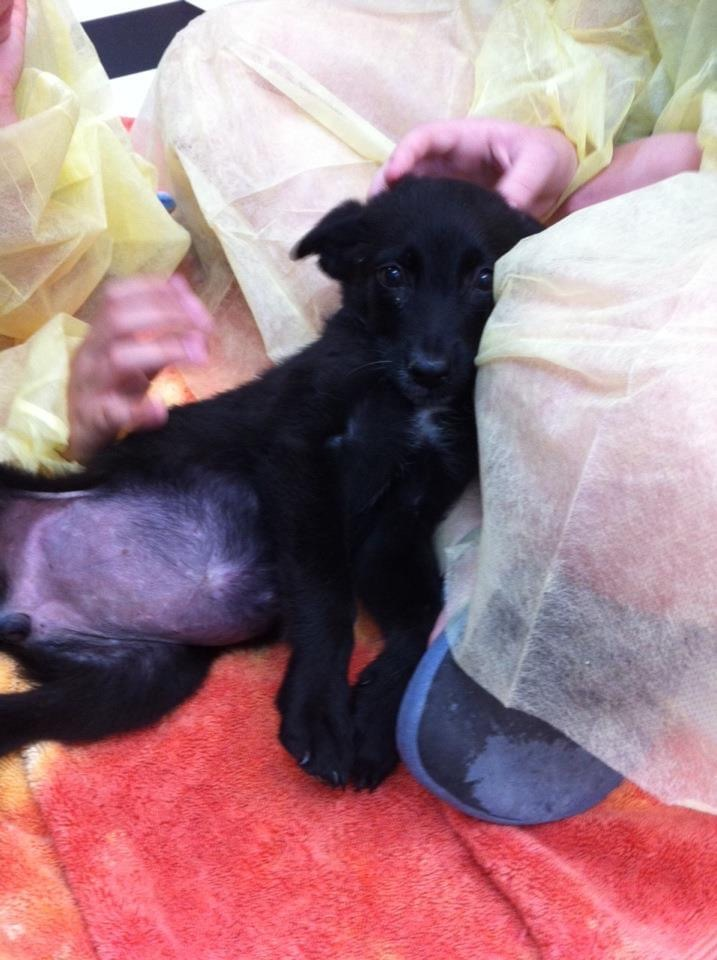

|
I used to volunteer at an animal shelter in Texas. When we decided to adopt another dog, this is the first shelter I would check. When we went to visit , they had just brought in a massive litter of Belgian Malinois mix puppies. As cute as they were, my family was not sure if they wanted a plain black dog. I googled adult black belgian malinois and it sold my whole family because the pictures were stunning. She was going to be a very beautiful dog. When we came back to pick her up once she was old enough, we found out a lot of her litter had died of Parvo. The shelter was not sure if our puppy had it or not so they quarantined her in a room with only cat kennels. We would come to visit her every day and had to wear protective gear so that we didn’t spread any germs to her. Much to the dismay of the staff my brother and I also taught her how to howl. After a few weeks they concluded she did not have parvo like her siblings and that we were free to take her home. We named her Paisley after the country singer Brad Paisley. She is very protective of our family and extremely selective in who she chooses to accept. The people she loves , she loves very deeply. She is the most cuddly dog we have ever had and she is spoiled beyond belief. |
 |